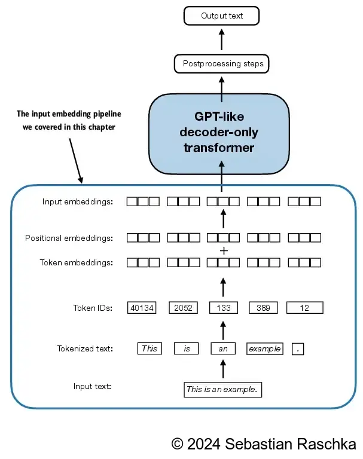

2. Xử lý dữ liệu text
Trước khi xây dựng mô hình ngôn ngữ lớn LLM, việc chuyển đổi dữ liệu text sang dữ liệu định dạng số để máy tính có thể xử lý là bước rất quan trọng.

2.1. Word embedding
Dữ liệu phi cấu trúc sẽ không thể sử dụng trực tiếp trong các mô hình mà cần phải chuyển sang dạng vector có giá trị liên tục. Quá trình chuyển đổi từ text sang vector gọi là nhúng (embedding). Khi thực hiện các phép nhúng, mỗi đoạn text sẽ được phân rã thành các vector nhiều chiều, như GPT-2 có 768 chiều, trong khi GPT3 có đến 12288 chiều.
2.2. Tokenization text
Trong quá trình chuyển đổi (embedding) từ text sang word, các từ hoặc cụm từ sẽ được chia thành các từ hoặc cụm từ được gọi là tokens. Trường hợp đơn giản nhất, mỗi từ, ký tự đứng riêng sẽ được chia thành tokens như ở dưới đây
2.2.1. Ví dụ với Python
Trong ví dụ dưới đây, ta sẽ đọc toàn bộ dữ liệu text từ một truện ngắn và xử lý token
[8]:
import os
import urllib.request
# Download file nếu dữ liệu chưa tồn tại
if not os.path.exists("data/the-verdict.txt"):
url = ("https://raw.githubusercontent.com/rasbt/"
"LLMs-from-scratch/main/ch02/01_main-chapter-code/"
"the-verdict.txt")
file_path = "./data/the-verdict.txt"
urllib.request.urlretrieve(url, file_path)
[7]:
with open("data/the-verdict.txt", "r", encoding="utf-8") as f:
raw_text = f.read()
print("Total number of character:", len(raw_text))
print(raw_text[:99])
Total number of character: 20479
I HAD always thought Jack Gisburn rather a cheap genius--though a good fellow enough--so it was no
Để có thể phân nhỏ dữ liệu text, ta cần làm sạch dữ liệu với regular expression, loại bỏ khoảng trắng, loại các ký tự đặc biệt, etc.
[10]:
import re
preprocessed = re.split(r'([,.:;?_!"()\']|--|\s)', raw_text)
preprocessed = [item.strip() for item in preprocessed if item.strip()]
[11]:
print(preprocessed[:99])
['I', 'HAD', 'always', 'thought', 'Jack', 'Gisburn', 'rather', 'a', 'cheap', 'genius', '--', 'though', 'a', 'good', 'fellow', 'enough', '--', 'so', 'it', 'was', 'no', 'great', 'surprise', 'to', 'me', 'to', 'hear', 'that', ',', 'in', 'the', 'height', 'of', 'his', 'glory', ',', 'he', 'had', 'dropped', 'his', 'painting', ',', 'married', 'a', 'rich', 'widow', ',', 'and', 'established', 'himself', 'in', 'a', 'villa', 'on', 'the', 'Riviera', '.', '(', 'Though', 'I', 'rather', 'thought', 'it', 'would', 'have', 'been', 'Rome', 'or', 'Florence', '.', ')', '"', 'The', 'height', 'of', 'his', 'glory', '"', '--', 'that', 'was', 'what', 'the', 'women', 'called', 'it', '.', 'I', 'can', 'hear', 'Mrs', '.', 'Gideon', 'Thwing', '--', 'his', 'last', 'Chicago', 'sitter']
2.3. Chuyển đổi text sang token ID
Mỗi token sẽ được đưa vào kho từ vựng (vocabulary), và sẽ đưa các từ, ký tự đặc biệt hoặc cụm từ thành các số nguyên duy nhất như dưới đây.
Tạo kho từ điển dữ liệu
[12]:
all_words = sorted(set(preprocessed))
vocab_size = len(all_words)
print(vocab_size)
1130
[15]:
# Tạo dictionary với token, integer
vocab = {token:integer for integer,token in enumerate(all_words)}
[17]:
# Hiển thị kết quả mappting từ điển
for i, item in enumerate(vocab.items()):
print(item)
if i >= 20:
break
('!', 0)
('"', 1)
("'", 2)
('(', 3)
(')', 4)
(',', 5)
('--', 6)
('.', 7)
(':', 8)
(';', 9)
('?', 10)
('A', 11)
('Ah', 12)
('Among', 13)
('And', 14)
('Are', 15)
('Arrt', 16)
('As', 17)
('At', 18)
('Be', 19)
('Begin', 20)
Quá trình tạo token ID có thể được đơn giản hóa bằng 3 bước sau
Tạo word tokenization
Tạo bộ từ điển vocabulary
Mapping token về key của bộ từ điển
Ta có thể tạo một class cho phép encode & decode dữ liệu text đơn giản từ bộ từ điển có sẵn (vocab ở ví dụ trên) như sau
[18]:
class SimpleTokenizerV1:
def __init__(self, vocab):
self.str_to_int = vocab
self.int_to_str = {i:s for s,i in vocab.items()}
# ecode để convert từ text sang embedding id
def encode(self, text):
preprocessed = re.split(r'([,.:;?_!"()\']|--|\s)', text)
preprocessed = [
item.strip() for item in preprocessed if item.strip()
]
ids = [self.str_to_int[s] for s in preprocessed]
return ids
# decode để convert từ embedding id về dạng text
def decode(self, ids):
text = " ".join([self.int_to_str[i] for i in ids])
# Replace spaces before the specified punctuations
text = re.sub(r'\s+([,.?!"()\'])', r'\1', text)
return text
[19]:
tokenizer = SimpleTokenizerV1(vocab)
text = """"It's the last he painted, you know,"
Mrs. Gisburn said with pardonable pride."""
ids = tokenizer.encode(text)
print(ids)
[1, 56, 2, 850, 988, 602, 533, 746, 5, 1126, 596, 5, 1, 67, 7, 38, 851, 1108, 754, 793, 7]
[21]:
# Decode
tokenizer.decode(ids)
[21]:
'" It\' s the last he painted, you know," Mrs. Gisburn said with pardonable pride.'
2.4. Các context tokens đặc biệt
Trong một số trường hợp, ta cần phải thêm các tokens để có thể hỗ trợ LLM xử lý và hiểu ngữ cảnh tốt hơn - như ký tự kết thúc đầu câu, cuối câu,… Một số tokens đặc biệt thường gặp như sau:
[BOS](beginning of sequence)[EOS](end of sequence)[UNK](unknown) - các từ không có trong vocabulary[PAD](padding) - bổ sung thêm token để độ dài văn bản trong quá trình huấn luyện là đồng nhất.
Ví dụ:
text 1:
Tôi yêu Việt Namtext 2:
Học LLM thật là thú vị
Độ dài của text1 là 4 token, trong khi text 2 có 6 token. Khi huấn luyện LLM sẽ cần độ dài của text tương đương nhau. Khi đó, text1 sẽ được chuyển đổi như sau
text 1 (new):
Tôi yêu Việt Nam [PAD] [PAD]
Lưu ý: Với GPT2, để đơn giản hóa quá trình, GPT2 sử dung <|endoftext|> để thay thế cho các token đặc biệt. Với trường hợp tokens không có trong bộ từ điển, GPT2 sẽ sử dụng kỹ thuật BPE (byte pair encoding) để xử lý.
Xem minh họa dưới đây để hiểu rõ hơn
Xem ví dụ dưới đây
[23]:
tokenizer = SimpleTokenizerV1(vocab)
text = "Hello, do you like tea. Is this-- a test?"
tokenizer.encode(text) # error
---------------------------------------------------------------------------
KeyError Traceback (most recent call last)
Cell In[23], line 3
1 tokenizer = SimpleTokenizerV1(vocab)
2 text = "Hello, do you like tea. Is this-- a test?"
----> 3 tokenizer.encode(text) # error
Cell In[18], line 13, in SimpleTokenizerV1.encode(self, text)
8 preprocessed = re.split(r'([,.:;?_!"()\']|--|\s)', text)
10 preprocessed = [
11 item.strip() for item in preprocessed if item.strip()
12 ]
---> 13 ids = [self.str_to_int[s] for s in preprocessed]
14 return ids
Cell In[18], line 13, in <listcomp>(.0)
8 preprocessed = re.split(r'([,.:;?_!"()\']|--|\s)', text)
10 preprocessed = [
11 item.strip() for item in preprocessed if item.strip()
12 ]
---> 13 ids = [self.str_to_int[s] for s in preprocessed]
14 return ids
KeyError: 'Hello'
Ở ví dụ trên, quá trình tokenization sẽ báo lỗi do từ Hello đang không có trong bộ từ điển ban đầu. Do đó, ta cần thực hiện 2 bước:
Mở rộng vocabulary với
<|unk|>và<|endoftext|>Điều chỉnh tokenization trong trường hợp không có dữ liệu
[24]:
all_tokens = sorted(list(set(preprocessed)))
all_tokens.extend(["<|endoftext|>", "<|unk|>"])
vocab = {token:integer for integer,token in enumerate(all_tokens)}
[27]:
print(len(vocab))
1132
[30]:
# Kiểm tra các ký tự đặc biệt đã được thêm vào embedding
for i, item in enumerate(list(vocab.items())[-5:]):
print(item)
('younger', 1127)
('your', 1128)
('yourself', 1129)
('<|endoftext|>', 1130)
('<|unk|>', 1131)
[31]:
# Viết lại class mới
class SimpleTokenizerV2:
def __init__(self, vocab):
self.str_to_int = vocab
self.int_to_str = { i:s for s,i in vocab.items()}
def encode(self, text):
preprocessed = re.split(r'([,.:;?_!"()\']|--|\s)', text)
preprocessed = [item.strip() for item in preprocessed if item.strip()]
preprocessed = [
item if item in self.str_to_int
# Nếu từ không có trong vocab thì chuyển |unk|
else "<|unk|>" for item in preprocessed
]
ids = [self.str_to_int[s] for s in preprocessed]
return ids
def decode(self, ids):
text = " ".join([self.int_to_str[i] for i in ids])
# Replace spaces before the specified punctuations
text = re.sub(r'\s+([,.:;?!"()\'])', r'\1', text)
return text
[34]:
tokenizer = SimpleTokenizerV2(vocab)
text1 = "Hello, do you like tea?"
text2 = "In the sunlit terraces of the palace."
text = " <|endoftext|> ".join((text1, text2))
print(text)
Hello, do you like tea? <|endoftext|> In the sunlit terraces of the palace.
[37]:
tokenizer.encode(text)
[37]:
[1131, 5, 355, 1126, 628, 975, 10, 1130, 55, 988, 956, 984, 722, 988, 1131, 7]
[41]:
tokenizer.encode("<|unk|> my word")
[41]:
[1131, 697, 1116]
2.5. Byte Pair Encoding
Bên cạnh kỹ thuật thêm các từ và đặt từ đơn giản như <|unk|>, GPT2 sử dụng kỹ thuật Byte Pair Encoding.
BPE sẽ chia nhỏ một từ mới thành các token nhỏ hơn và đã tồn tại trong kho từ vựng. BPE xây dựng vốn từ vựng bằng cách kết hợp lặp đi lặp lại các ký tự thường gặp thành từ phụ và từ phụ thường gặp thành từ. Ví dụ: BPE bắt đầu bằng việc thêm tất cả các ký tự đơn riêng lẻ vào từ vựng của nó ("a", "b", v.v.).
Trong giai đoạn tiếp theo, nó hợp nhất các tổ hợp ký tự thường xuất hiện cùng nhau thành các từ phụ. Ví dụ: "d" và "e" có thể được hợp nhất thành từ phụ "de", từ này phổ biến trong nhiều tiếng Anh.
Thư viện phổ biến để encode text embeding là titoken với core được viết bằng Rust để tăng tốc độ xử lý và tính toán
[42]:
import importlib
import tiktoken
print("tiktoken version:", importlib.metadata.version("tiktoken"))
tiktoken version: 0.8.0
[43]:
tokenizer = tiktoken.get_encoding("gpt2")
[45]:
text = (
"Hello, do you like tea? <|endoftext|> In the sunlit terraces"
"of someunknownPlace loretipsum."
)
integers = tokenizer.encode(text, allowed_special={"<|endoftext|>"})
print(integers)
[15496, 11, 466, 345, 588, 8887, 30, 220, 50256, 554, 262, 4252, 18250, 8812, 2114, 1659, 617, 34680, 27271, 300, 9997, 2419, 388, 13]
[47]:
strings = tokenizer.decode(integers)
print(strings)
Hello, do you like tea? <|endoftext|> In the sunlit terracesof someunknownPlace loretipsum.
[50]:
# tokenize với tiếng Việt
tokenizer.encode("Cộng hòa xã hội chủ nghĩa Việt Nam")
[50]:
[34,
157,
119,
247,
782,
289,
127,
110,
64,
2124,
26102,
289,
157,
119,
247,
72,
442,
157,
119,
100,
299,
456,
128,
102,
64,
16049,
157,
119,
229,
83,
17871]
2.6. Data sampling
Như ta đã biết, LLM tập trung dự báo các từ tiếp theo trong một đoạn văn bản. Để xây dựng dữ liệu huấn luyện cho LLM, ta cần tạo các cặp vector đầu vào - kết quả tương ứng.
[52]:
with open("data/the-verdict.txt", "r", encoding="utf-8") as f:
raw_text = f.read()
enc_text = tokenizer.encode(raw_text)
print(len(enc_text))
5145
[55]:
# Lấy dữ liệu sample
enc_sample = enc_text[50:]
[62]:
# Tạo context 4 từ và dự đoán từ tiếp theo
context_size = 4
x = enc_sample[:context_size]
y = enc_sample[1:context_size+1]
z = enc_sample[2:context_size+2]
print(f"x: {x}")
print(f"y: {y}")
print(f"z: {z}")
x: [290, 4920, 2241, 287]
y: [4920, 2241, 287, 257]
z: [2241, 287, 257, 4489]
Các cặp input, output cần dự báo sẽ như sau
[64]:
for i in range(1, context_size+1):
context = enc_sample[:i]
desired = enc_sample[i]
print(context, "---->", desired)
[290] ----> 4920
[290, 4920] ----> 2241
[290, 4920, 2241] ----> 287
[290, 4920, 2241, 287] ----> 257
[66]:
for i in range(1, context_size+1):
context = enc_sample[:i]
desired = enc_sample[i]
print(tokenizer.decode(context), "---->", tokenizer.decode([desired]))
and ----> established
and established ----> himself
and established himself ----> in
and established himself in ----> a
2.6.1. Xây dựng data loader
Để thuận tiện cho việc chuẩn bị dữ liệu input/output cho LLM, ta cần xây dựng một data loader class, cho phép tạo ra các tensor chứa input & output cho LLM
[67]:
import torch
print("PyTorch version:", torch.__version__)
PyTorch version: 2.5.1+cu124
[68]:
from torch.utils.data import Dataset, DataLoader
class GPTDatasetV1(Dataset):
def __init__(self, txt, tokenizer, max_length, stride):
self.input_ids = []
self.target_ids = []
# Tokenize the entire text
token_ids = tokenizer.encode(txt, allowed_special={"<|endoftext|>"})
# Use a sliding window to chunk the book into overlapping sequences of max_length
for i in range(0, len(token_ids) - max_length, stride):
input_chunk = token_ids[i:i + max_length]
target_chunk = token_ids[i + 1: i + max_length + 1]
self.input_ids.append(torch.tensor(input_chunk))
self.target_ids.append(torch.tensor(target_chunk))
def __len__(self):
return len(self.input_ids)
def __getitem__(self, idx):
return self.input_ids[idx], self.target_ids[idx]
[69]:
def create_dataloader_v1(txt, batch_size=4, max_length=256,
stride=128, shuffle=True, drop_last=True,
num_workers=0):
# Initialize the tokenizer
tokenizer = tiktoken.get_encoding("gpt2")
# Create dataset
dataset = GPTDatasetV1(txt, tokenizer, max_length, stride)
# Create dataloader
dataloader = DataLoader(
dataset,
batch_size=batch_size,
shuffle=shuffle,
drop_last=drop_last,
num_workers=num_workers
)
return dataloader
[71]:
with open("data/the-verdict.txt", "r", encoding="utf-8") as f:
raw_text = f.read()
[73]:
dataloader = create_dataloader_v1(
raw_text, batch_size=1, max_length=4, stride=1, shuffle=False
)
data_iter = iter(dataloader)
first_batch = next(data_iter)
print(first_batch)
[tensor([[ 40, 367, 2885, 1464]]), tensor([[ 367, 2885, 1464, 1807]])]
Lưu ý: stride = 1 cho phép dịch chuyển context đi 1 token.
[74]:
dataloader = create_dataloader_v1(raw_text, batch_size=8, max_length=4, stride=4, shuffle=False)
data_iter = iter(dataloader)
inputs, targets = next(data_iter)
print("Inputs:\n", inputs)
print("\nTargets:\n", targets)
Inputs:
tensor([[ 40, 367, 2885, 1464],
[ 1807, 3619, 402, 271],
[10899, 2138, 257, 7026],
[15632, 438, 2016, 257],
[ 922, 5891, 1576, 438],
[ 568, 340, 373, 645],
[ 1049, 5975, 284, 502],
[ 284, 3285, 326, 11]])
Targets:
tensor([[ 367, 2885, 1464, 1807],
[ 3619, 402, 271, 10899],
[ 2138, 257, 7026, 15632],
[ 438, 2016, 257, 922],
[ 5891, 1576, 438, 568],
[ 340, 373, 645, 1049],
[ 5975, 284, 502, 284],
[ 3285, 326, 11, 287]])
2.7. Token embedding
Bước tiếp theo là triển chuyển đổi các token id thành các vector nhúng (vector embedding) như dưới đây
Ví dụ: Ta có 4 word id và cần chuyển đổi thành vector embedding với kích thước là 3
[75]:
input_ids = torch.tensor([2, 3, 5, 1])
[76]:
vocab_size = 6
output_dim = 3
torch.manual_seed(123)
embedding_layer = torch.nn.Embedding(vocab_size, output_dim)
[77]:
print(embedding_layer.weight)
Parameter containing:
tensor([[ 0.3374, -0.1778, -0.1690],
[ 0.9178, 1.5810, 1.3010],
[ 1.2753, -0.2010, -0.1606],
[-0.4015, 0.9666, -1.1481],
[-1.1589, 0.3255, -0.6315],
[-2.8400, -0.7849, -1.4096]], requires_grad=True)
[78]:
print(embedding_layer(torch.tensor([3])))
tensor([[-0.4015, 0.9666, -1.1481]], grad_fn=<EmbeddingBackward0>)
Convert một id ra vector embedding
[85]:
# Tensor 3
print(embedding_layer(torch.tensor([3])))
# Tensor 1
print(embedding_layer(torch.tensor([1])))
tensor([[-0.4015, 0.9666, -1.1481]], grad_fn=<EmbeddingBackward0>)
tensor([[0.9178, 1.5810, 1.3010]], grad_fn=<EmbeddingBackward0>)
Convert toàn bộ id ra vector embedding
[88]:
print(embedding_layer(input_ids))
tensor([[ 1.2753, -0.2010, -0.1606],
[-0.4015, 0.9666, -1.1481],
[-2.8400, -0.7849, -1.4096],
[ 0.9178, 1.5810, 1.3010]], grad_fn=<EmbeddingBackward0>)
2.8. Mã hóa vị trí từ
Với cách thực hiện word embedding, mỗi từ sẽ có vector biểu diễn giống nhau với mọi câu.
Tuy nhiên, trong văn bản, các từ ở các vị trí khác nhau sẽ có các biểu đạt và ý nghĩa khác nhau. Do đó, để khắc phục nhược điểm này, ta có thể bổ sung tham số về vị trí. Vị trí này có thể chia làm 2 nhóm - vị trí tương đối và vị trí tuyệt đối.
Vị trí tuyệt đối mô tả vị trí của embeding trong đoạn văn. Trong khi đó, vị trí tương đối mô tả mối quan hệ theo khía cạnh - các vector cách nhau bao xa.
Ví dụ với Python
[89]:
vocab_size = 50257
output_dim = 256
token_embedding_layer = torch.nn.Embedding(vocab_size, output_dim)
[90]:
max_length = 4
dataloader = create_dataloader_v1(
raw_text, batch_size=8, max_length=max_length,
stride=max_length, shuffle=False
)
data_iter = iter(dataloader)
inputs, targets = next(data_iter)
[92]:
print("Token IDs:\n", inputs)
print("\nInputs shape:\n", inputs.shape)
Token IDs:
tensor([[ 40, 367, 2885, 1464],
[ 1807, 3619, 402, 271],
[10899, 2138, 257, 7026],
[15632, 438, 2016, 257],
[ 922, 5891, 1576, 438],
[ 568, 340, 373, 645],
[ 1049, 5975, 284, 502],
[ 284, 3285, 326, 11]])
Inputs shape:
torch.Size([8, 4])
[95]:
token_embeddings = token_embedding_layer(inputs)
print(token_embeddings.shape)
torch.Size([8, 4, 256])
GPT2 sử dụng position embedding theo giá trị tuyệt đối
[94]:
context_length = max_length
pos_embedding_layer = torch.nn.Embedding(context_length, output_dim)
[96]:
pos_embeddings = pos_embedding_layer(torch.arange(max_length))
print(pos_embeddings.shape)
torch.Size([4, 256])
[97]:
input_embeddings = token_embeddings + pos_embeddings
print(input_embeddings.shape)
torch.Size([8, 4, 256])